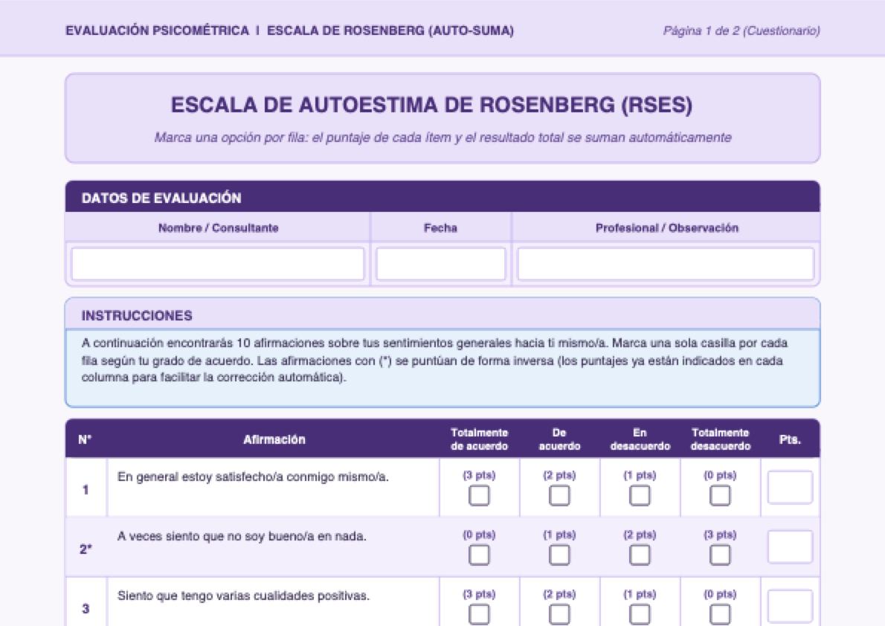
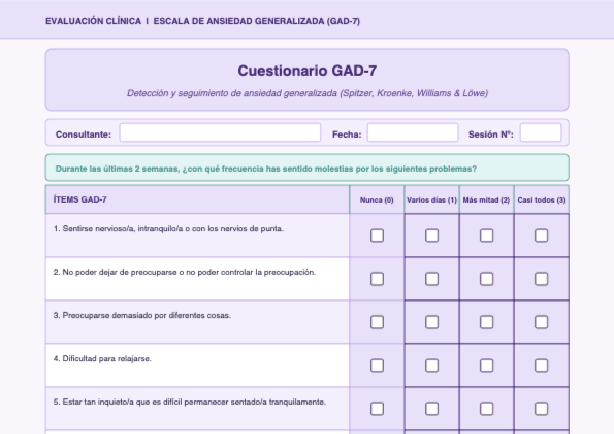
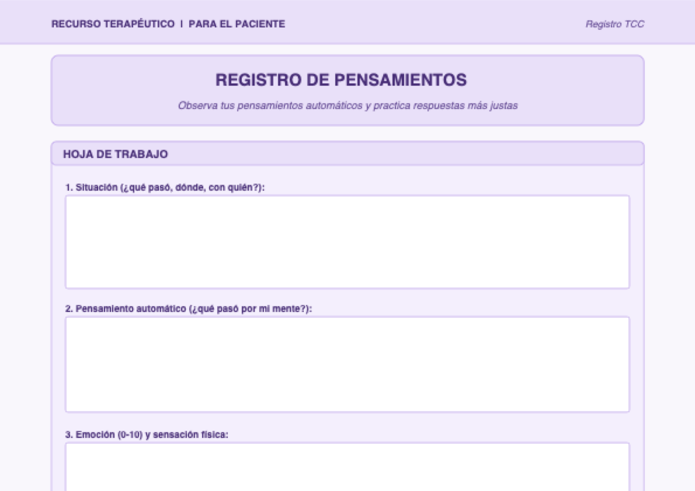

Psic. Camila Rojas
Online · Adultos y parejas Terapia de parejaAcompañamiento en comunicación afectiva, reconstrucción de confianza, acuerdos y manejo constructivo de crisis vinculares.
Agendar sesión →Tu salud mental en manos de profesionales que han adaptado la clínica tradicional a un espacio digital, seguro y al que puedes acceder cuando y donde quieras.
Un espacio ético y cercano para entender qué mantiene tu malestar más allá de los síntomas superficiales.
Trabajamos con fichas y ejercicios digitales interactivos para que el proceso continúe en tu vida cotidiana.
Sesiones online flexibles que se adaptan a tu rutina y zona horaria sin perder profundidad clínica.
Elige al profesional según tu motivo de consulta y agenda tu sesión directamente.
Acompañamiento en comunicación afectiva, reconstrucción de confianza, acuerdos y manejo constructivo de crisis vinculares.
Agendar sesión →
Trabajo clínico profundo en regulación emocional, patrones relacionales complejos, terapia de esquemas y habilidades DBT.
Agendar sesión →
Abordaje de la autocrítica, estados de ánimo bajos, agotamiento emocional y construcción de hábitos acordes a tus valores.
Agendar sesión →
Intervención cognitivo-conductual en crisis de pánico, agorafobia, rumiación y recuperación de la autonomía cotidiana.
Agendar sesión →"Sentí que por primera vez entendía qué me estaba pasando y las fichas interactivas entre sesiones me ayudaron muchísimo a bajarlo a tierra."
"Tenía miedo de que la terapia online fuera fría, pero encontré un espacio súper cercano, claro y con herramientas prácticas desde el día uno."
"Llegamos bloqueados sin saber cómo escucharnos. Nos dieron estructura, ejercicios concretos y un lugar seguro para conversar."
Nuestro equipo ha adaptado centenares de recursos de la clínica tradicional, a versiones digitales que facilitan el acceso a terapia y garantizan su éxito. Nuestros recursos están siendo ocupados por decenas y decenas de psicólogos.




Sí. Diversos estudios clínicos muestran resultados equivalentes en ansiedad, depresión, pareja y regulación emocional, con la ventaja de mantener la continuidad desde tu propio espacio.
Solo un celular, tablet o computador con cámara, micrófono, conexión estable a internet y un lugar tranquilo donde puedas hablar con privacidad.
Según los objetivos de tu proceso, tu psicólogo puede compartirte fichas y registros interactivos en PDF para trabajar entre sesiones desde cualquier dispositivo.
Eliges al profesional en la sección de Psicólogos y coordinas directamente tu horario disponible. Si necesitas reagendar, puedes avisar con anticipación según las condiciones de cada especialista.
Encuentra al psicólogo indicado para lo que estás atravesando hoy y comienza tu proceso terapéutico online.
Agendar Sesión →